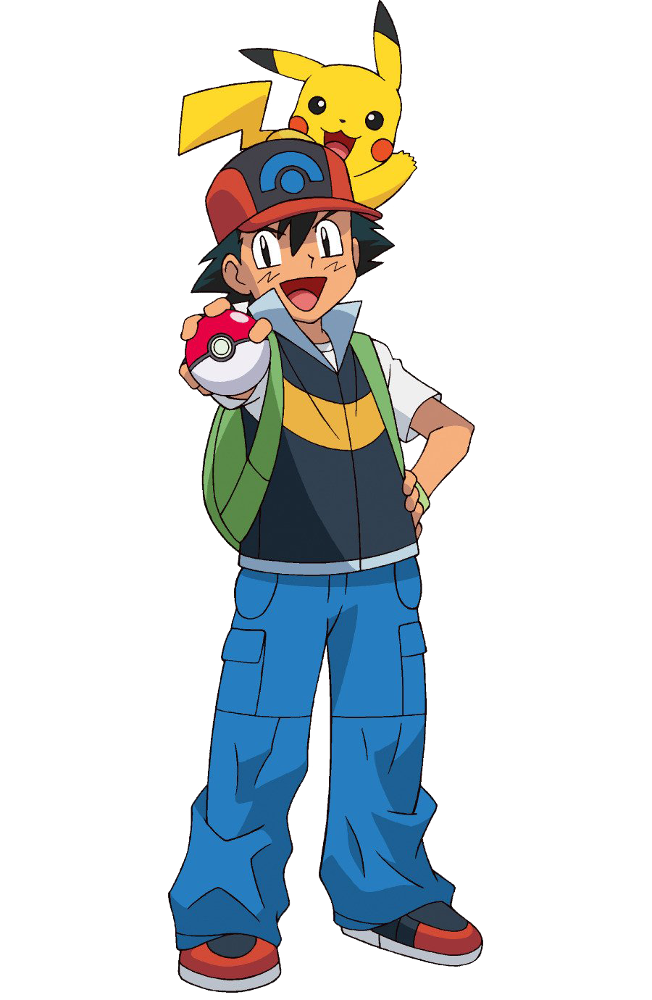

Atrápalos ya...
¡Pokémon!
| Es un anime metaserial creado por Satoshi Tajiri, Junichi Masuda y Ken Sugimori, que narra la historia de Ash Ketchum, un joven entrenador Pokémon de Pueblo Paleta que comienza un viaje para alcanzar su sueño, ser un Maestro Pokémon. La serie está basada en la saga de videojuegos de Pokémon también creada por Satoshi Tajiri, desarrollada por Game Freak y distribuida por Nintendo, que aparecieron por primera vez en el mercado japonís el 27 de febrero de 1996. |  |
| Ash Ketchum es un muchacho entusiasta a quien le gustan los Pokémon y las batallas. Su gran pasión por los Pokémon lo ha llevado a proponerse el objetivo de convertirse en Maestro Pokémon, el más alto grado de entrenamiento Pokémon, motivo por el cual comienza un viaje en búsqueda de este título. Al cumplir 10 a√±os, Ash tiene la oportunidad de recibir su Pokémon inicial por parte del Profesor Oak. Desafortunadamente, se quedó dormido una noche antes de su primer día de viaje y para cuando llegó al laboratorio del profesor, todos los Pokémon iniciales (Bulbasaur, Charmander y Squirtle) ya habían sido elegidos por otros entrenadores.1 Su insistencia por tener un Pokémon, le permitió recibir como su Pokémon inicial un Pikachu terco al que no le gusta entrar en la Pokébola/Poké Ball. Así es como comienza su gran aventura llevando asi una gran serie que sigue siendo transmitida actualmente, cumpliendo 25 largos años donde Ash Ketchum recorrió junto a sus amigos. |  |